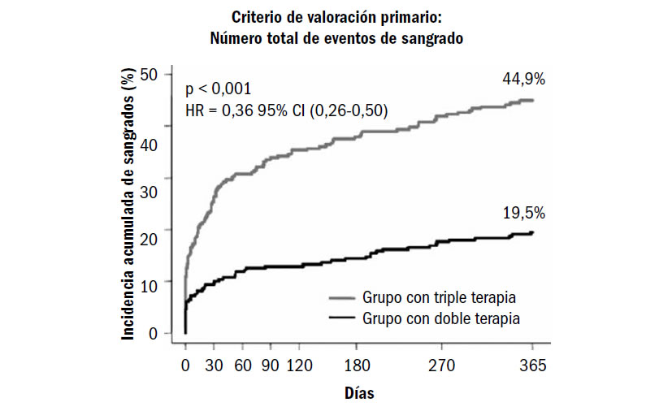

¿HAY UN BENEFICIO DE LA TRIPLE TERAPIA CON EL USO DE ANTICOAGULANTES EN LOS PACIENTES CON FIBRILACIÓN AURICULAR Y ANTIAGREGANTES POR IMPLANTACIÓN DEL STENT CORONARIO?
79
Un 5 a 7% de los pacientes que se realizan una angioplastia percutánea coronaria (ATC) están
anticoagulados por fibrilación auricular permanente. La necesidad de la terapia antiagregante dual,
aspirina más clopidogrel, para evitar la trombosis del stent y disminuir los eventos isquémicos luego
de la intervención, puede verse modificada por un aumento del riesgo de sangrado cuando se
suma la anticoagulación oral en este grupo especial de pacientes. La necesidad de la triple terapia
(aspirina, clopidogrel y warfarina) aumenta significativamente el sangrado mayor, principalmente
durante los primeros 6 meses luego del implante.
Los mecanismos involucrados en la formación del trombo difieren entre la fibrilación auricular y la
trombosis coronaria o del stent. En la primera parecen predominar los factores plasmáticos (factores
de la coagulación) y en la ATC, las plaquetas parecen cumplir un papel protagónico (factor
celular). Por lo tanto, la triple terapia parece razonable en esta situación clínica.
El riesgo de sangrado mayor se ve claramente aumentado con la triple terapia. Los pacientes con
un síndrome coronario agudo y sangrado mayor tienen hasta 7 veces más riesgo de mortalidad que
aquellos sin sangrado.
El riesgo de sangrado mayor es de aproximadamente 2,2% luego del primer mes de la ATC con stent
y alcanza el 12% al año.
El estudio WOEST es el primer ensayo aleatorizado en comparar dos regímenes, con y sin aspirina,
en pacientes con anticoagulación oral luego de la colocación de un stent coronario. Este estudio,
realizado en Holanda y Bélgica, tenía por hipótesis que el clopidogrel solo era más seguro, en
cuanto al sangrado mayor, que la combinación con aspirina en pacientes con fibrilación auricular
y anticoagulación oral, sin incrementar el riesgo de eventos isquémicos coronarios. Se incluyeron
pacientes portadores tanto de stents metálicos como de stents con liberadores de fármacos. El
seguimiento se realizó a un año y el punto final principal fue el sangrado mayor. La incidencia acumulada
al año de sangrado mayor fue con la doble terapia (warfarina más clopidogrel) del 19,5%
vs. el 44,9% con la triple terapia (HR: 0,36; IC 95%: 0,26 a 0,50); p < 0,001), sin aumentar los
puntos secundarios relacionados con los eventos isquémicos secundarios (Figura 1).
Los nuevos anticoagulantes orales (NACO) han demostrado ser seguros y más eficaces que la
warfarina en los pacientes con fibrilación auricular no valvular. En este marco, el rivaroxabán está
siendo evaluado en el estudio PIONNER AF-PCI, para demostrar su seguridad en comparación con
la warfarina combinada con aspirina en dosis bajas o clopidogrel-ticagrelol-prasugrel como antiagregantes
antagonistas de los receptores P2Y12 plaquetarios.
En la actualidad carecemos de estudios aleatorizados al respecto y las recomendaciones se obtienen
de registros o pequeños ensayos clínicos.
Figura 1. Punto final primario del estudio Woest.

De ellos podemos extraer las siguientes recomendaciones:
1. Usar preferentemente la vía radial.
2. Usar bajas dosis de antiagragantes plaquetarios (AAS 100 mg).
3. No realizar carga de clopidogrel.
4. Mantener el paciente con una RIN de 2 a 2,5.
5. Que el TTR sea alrededor del 70%.
6. Usar protección gástrica.
Además del tipo de stent implantado, la duración de la terapia anticoagulante y antiagregante
puede evaluarse según la escala CHA2DS2-VASc.
CONCLUSIONES
Basadas en el estudio WOEST, las guías 2014 de AHA/ACC de fibrilación auricular recomiendan
los inhibidores de la vitamina K más clopidogrel por sobre la terapia antiagregante dual
con aspirina por el menor riesgo de sangrado mayor.
Utilizar clopidogrel y aspirina (o clopidogrel solo) el menor tiempo posible, al menos por un mes.
Usar dicumarínicos con una RIN de 2 a 2,5.
Preferir un acceso radial.
Usar protección gástrica con inhibidores de la bomba de protones mientras dure el tratamiento
combinado.
Evitar los nuevos antiagregantes y anticoagulantes.
LECTURAS RECOMENDADAS
Dewilde WJM, et al. Use of clopidogrel with or without aspirin in patients taking oral anticoagulant therapy and
undergoing percutaneous coronary intervention: an open-label, randomised, controlled trial for the WOEST trial
investigators. Lancet 2013;381:1107-15.
Fang MC, et al. Death and disability from warfarin-associated intracranial and extracranial hemorrhages. Am J
Med 2007;120:700-5.
Lip GY, et al. Antithrombotic management of atrial fibrillation patients presenting with acute coronary syndrome
and/or undergoing coronary stenting: executive summary—a Consensus Document of the European Society of
Cardiology Working Group on Thrombosis, endorsed by the European Heart Rhythm Association (EHRA) and the
European Association of Percutaneous Cardiovascular Interventions (EAPCI). Eur Heart J 2010;31:1311-8.
Lip GY, et al. European Society of Cardiology Working Group on Thrombosis. Management of antithrombotic
therapy in atrial fibrillation patients presenting with acute coronary syndrome and/or undergoing percutaneous
coronary intervention/stenting. Thromb Haemost 2010;103:13-28.
Manoukian SV, et al. Impact of major bleeding on 30-day mortality and clinical outcomes in patients with acute
coronary syndromes: an analysis from the ACUITY trial. J Am Coll Cardiol 2007;49:1362-8.
Paiking JS, et al. Triple antithrombotic therapy in patients with atrial fibrillation and coronary artery stents. Circulation
2010;121:2067-70.
Rao SV, et al. Impact of bleeding severity on clinical outcomes among patients with acute coronary syndromes.
Am J Cardiol 2005;96:1200-6.
Rogacka R, et al. Dual antiplatelet therapy after percutaneous coronary intervention with stent implantation in
patients taking chronic oral anticoagulation. J Am Coll Cardiol Cardiovasc Interv 2008;1:56-61.
Rossini R, et al. Long-term outcomes in patients undergoing coronary stenting on dual oral antiplatelet treatment
requiring oral anticoagulant therapy. Am J Cardiol 2008;102:1618-23.
Rubboli A, et al. WARfarin and Coronary STENTing (WAR-STENT) Study Group. Periprocedural management and
in-hospital outcome of patients with indication for oral anticoagulation undergoing coronary artery stenting. J
Intervent Cardiol 2009;22:390-7.
Sorensen R, et al. Risk of bleeding in patients with acute myocardial infarction treated with different combinations
of aspirin, clopidogrel, and vitamin K antagonists in Denmark: a retrospective analysis of nationwide registry
data. Lancet 2009;374:1967-74.
Wang TY, et al. Discharge antithrombotic strategies among patients with acute coronary syndrome previously on
warfarin anticoagulation: physician practice in the CRUSADE registry. Am Heart J 2008;155:361-8.